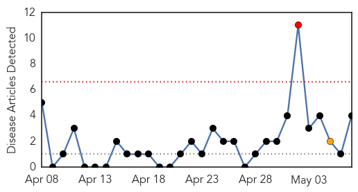

Chikungunya
30-Day Web Trend
1 alerts, 1 warnings

30-Day Twitter Trend
2 alerts, 0 warnings

Article Locations
Article Confidences

Top Articles:
Top Tweets:
- 0.707
- MERS updates; Haiti reports 14 chikungunya cases; Report on DoD's antimicrobial resistance program. HealthSecurity http://t.co/H1JhGCUg02
Unknown
30-Day Web Trend
2 alerts, 2 warnings

30-Day Twitter Trend
2 alerts, 3 warnings

Article Locations
Article Confidences
Top Articles:
- 0.990
- Indiana reports no new MERS cases
- 0.987
- Mers patient in US improving
- 0.985
- First U.S. MERS Patient Will Be Isolated At Home After Hospital Discharge
- 0.970
- First Ever H5N6 Death Case Confirmed in China
- 0.969
- Two Dead and Three in Quarantine as Indonesia MERS Fears Build
- 0.924
- Polio's History—and Why It's Again Becoming a Threat
- 0.917
- Chicago Tribune
- 0.917
- Chicago Tribune
- 0.910
- Saudi hospital head sacked as MERS death toll hits 117
- 0.891
- Who’s to Blame for Global Polio Emergency?
- 0.866
- Yemen says kills militant behind killing of French security agent
- 0.866
- Putin says Russia has withdrawn forces from Ukraine border
- 0.866
- Pro-Russians in Ukraine's Donetsk to discuss Putin's call on referendum
- 0.866
- Russia urges immediate end to Kiev security operation in east
- 0.866
- China Confirms First Death from New Strain of Bird Flu
- 0.862
- Polio warning by Who should put all nations on guard
- 0.845
- The Voice of Russia: News, Breaking news, Politics, Economics, Business, Russia, International current events, Expert opinion, podcasts, Video
- 0.742
- Swine Virus Seminar includes TVMDL Amarillo
- 0.725
- Al Jazeera English
- 0.706
- The Voice of Russia: News, Breaking news, Politics, Economics, Business, Russia, International current events, Expert opinion, podcasts, Video
- 0.703
- GaitTrack app makes cellphone a medical monitor for heart, lung patients
- 0.673
- Our Ability to Cope with Food Poisoning Outbreaks Has Not Improved Much in 50 Years
- 0.659
- World faces polio threat
- 0.652
- Punjab brings in own polio restrictions
- 0.635
- Pakistan bracing for polio travel restrictions
- 0.607
- Ghana, Business Advice, Jobs, News, Business Directory, Real Estate, Finance, Forms, Auto
- 0.603
- Pakistan seeks time on polio travel restrictions
- 0.603
- Chinese Scientists Announce H7N9 Treatment Breakthrough
- 0.597
- Phone App Monitors Heart, Lung Symptoms
- 0.582
- The 5 Most Commonly Overdiagnosed Conditions
- 0.572
- Syria polio outbreak: Medical access vital
- 0.564
- EU worries over pig virus prompt new blood import rules
- 0.562
- Sanofi Partners Lagos to Improve Access to Medicines, Articles
- 0.530
- Significant decline in deaths after Massachusetts’ health reform
Top Tweets:
- 0.729
- 5 countries introduce rotavirus vaccine over last 2 wks w support Congo R, Angola, Haiti, Zimbabwe, Madagascar vaccineswork
- 0.666
- RT: From SaudiArabia, WHO has been informed of 406 lab-confirmed Middle East respiratory syndrome cases incl 101 deaths (3 May 2014) …
- 0.662
- RT: On 15 April 2014, Yemen notified WHO of an additional lab-confirmed Middle East respiratory syndrome cases MERS
- 0.528
- KSA MoH reports 18 new MERS cases and 4 deaths. Today’s cases tally became 28, and the overall cases rose to 449. http://t.co/SrkfuB9FaK
- 0.517
- RT: WHO experts team completed a 5-day mission to SaudiArabia, assisting natl health authorities on Middle East respiratory syndrome …